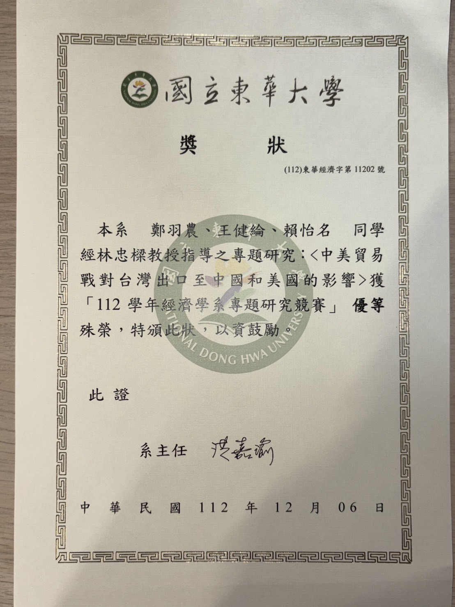

關於我
我目前就讀於國立台北科技大學資訊工程研究所，畢業於國立東華大學經濟學系及資訊工程學系，具備金融資料分析、深度學習與語言模型等跨領域的學術背景。
在學期間，我不僅保持優異的成績，還參與多項合作專題，並擔任教學助教，培養出良好的溝通能力與解決問題的能力。此外，我擁有強烈的學習意願，能快速適應不同環境並迎接挑戰。
學歷證明 成績優異證明 專題研究檔案 自傳檔案
學歷證明 成績優異證明 專題研究檔案 自傳檔案
學習經歷與作品
以下是我曾完成的作品與技術應用：
-
股價預測與投資組合管理網站：這是一個多元股票投資組合平台，利用深度學習和時序模型進行股價預測，並提供風險評估與投資建議。在該專案中，我負責預測模型構建及爬蟲財報。
點擊展示影片 -
Kaggle 競賽：我在 Kaggle 上參加了數據分析競賽，從中學會了如何處理大規模數據，並運用機器學習技術進行預測分析。
點擊連結到我的 Kaggle -
CAPM投資組合分析報告：這是一個進行回測的投資組合分析報告，利用CAPM模型進行風險評估與投資建議。
點擊觀看投資報告分析 -
東華車友即時LINE BOT (已停止運行)：這是一個爬取FB貼文並且自動傳訊息到LINE BOT提醒的爬蟲專案。
點擊展示專案照片
-
基於大型語言模型的點餐推薦系統–以速食連鎖餐廳為例：使用過Anything LLM去部署本地語言模型和串接API，並利用內建的RAG技術去製作一個點餐問答系統，並投稿於2025決策分析研討會。
研討會投稿證明
-
中美貿易戰對台灣出口至中國和美國的影響：分析台灣產業在中美貿易戰底下的變化，利用雙重差分法進行分析。
專題優勝